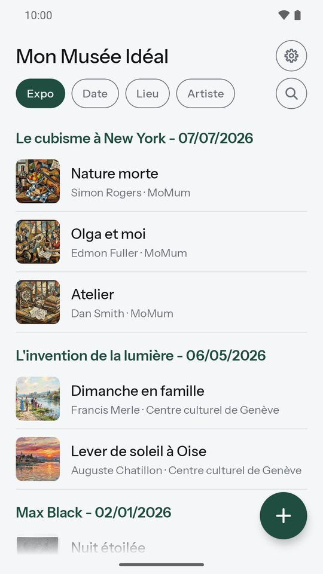
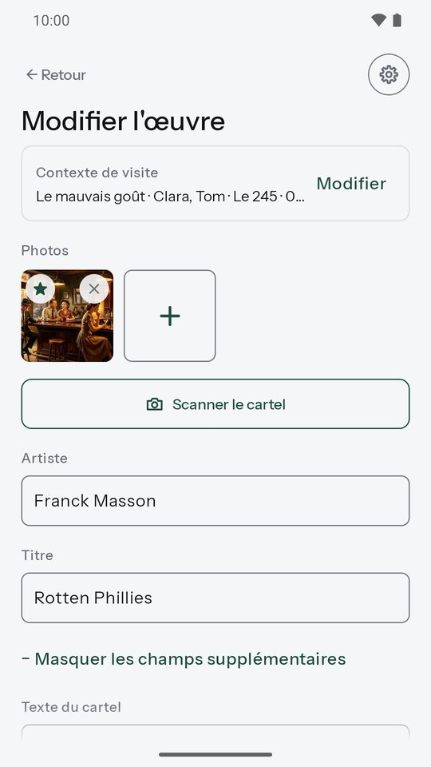
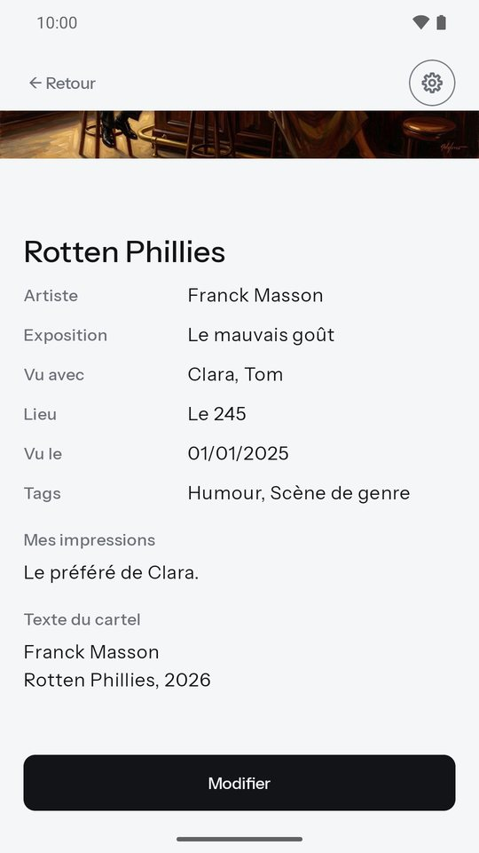
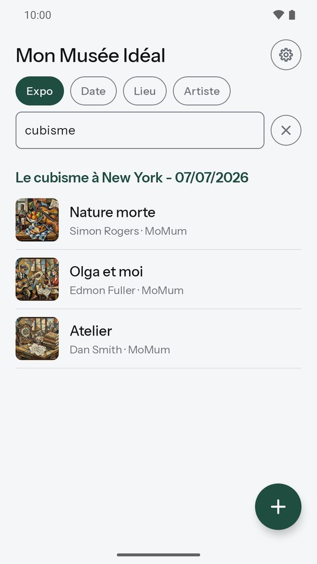
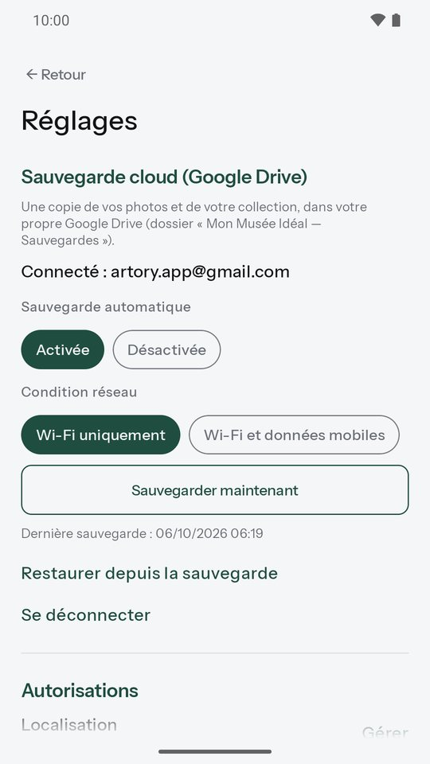
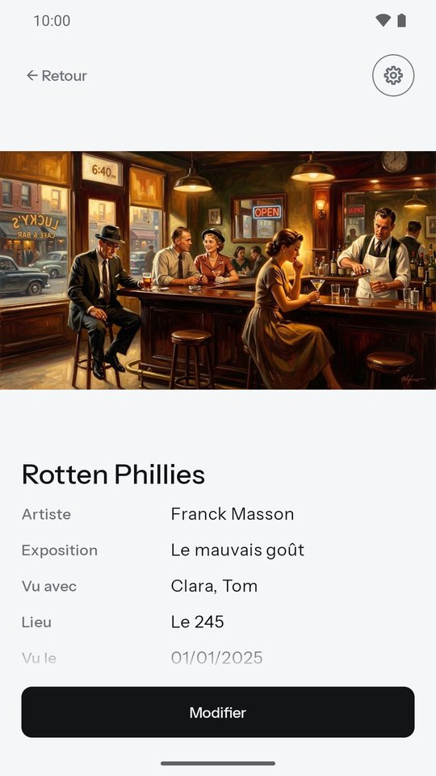
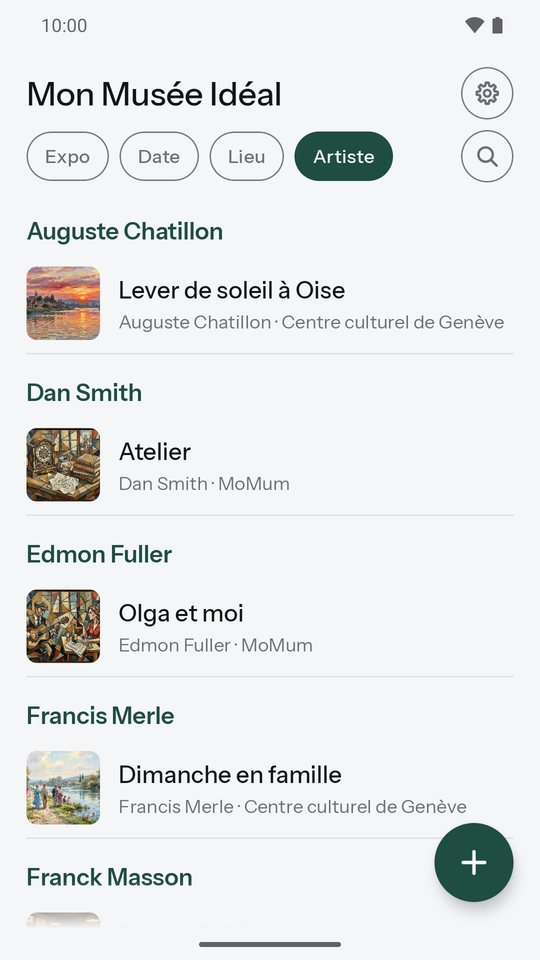
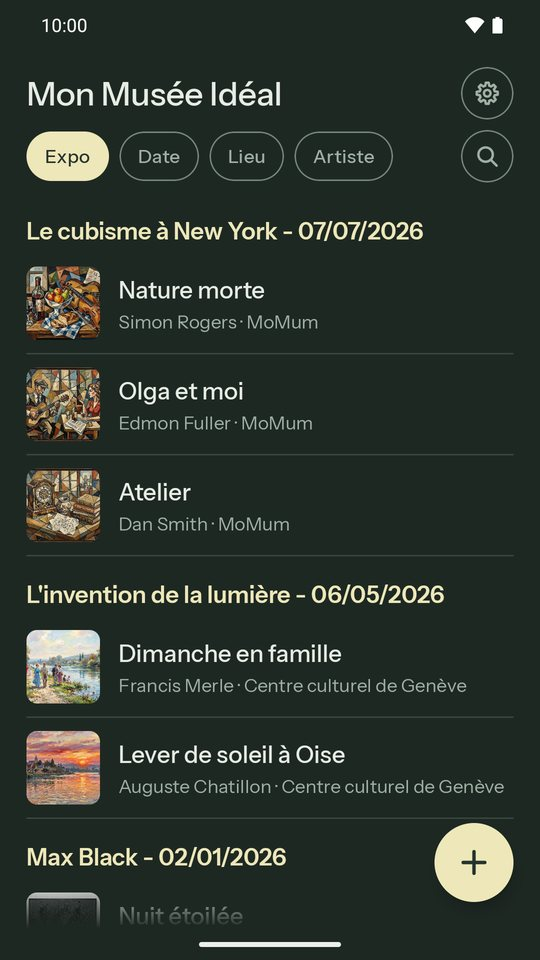
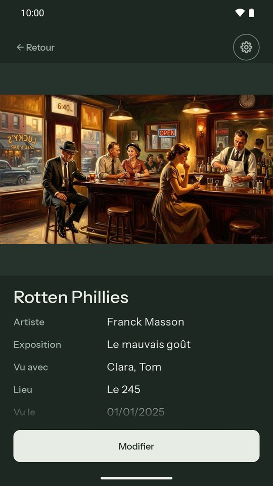

Mon Musée Idéal
Gardez la trace des œuvres qui vous ont marqué.
Une œuvre vous a marqué dans une exposition ? Photographiez-la, notez ce qu'elle vous inspire, et retrouvez-la quand vous voulez. Mon Musée Idéal est votre carnet de visite personnel, simple et sans compte à créer.
Bientôt sur Google PlayApplication Android gratuite · français et anglais

Tout ce qu’il faut, rien de plus
Ajoutez une œuvre en quelques secondes
Prenez l'œuvre en photo ou importez-la de votre galerie. Scannez le cartel : l'application lit le texte et vous propose l'artiste et le titre, directement sur votre téléphone. L'exposition, le lieu, la date et vos compagnons de visite sont repris d'une œuvre à l'autre.

Gardez ce qui compte pour vous
Vos impressions, le texte du cartel, vos propres tags comme « Coup de cœur ». Plusieurs photos par œuvre, et votre musée préféré proposé par défaut.

Retrouvez tout facilement
Votre collection classée par exposition, par date, par lieu ou par artiste, et une recherche dans tous vos textes : titre, artiste, exposition, lieu, impressions, cartel.

Vos données restent à vous
Tout est enregistré sur votre téléphone. Aucun compte, aucune publicité. Si vous le souhaitez, une sauvegarde dans votre propre Google Drive, avec restauration sur un nouveau téléphone.

En images




Votre vie privée, d’abord
- Pas de compte à créer : nous ne savons pas qui vous êtes.
- Vos photos et vos notes restent sur votre téléphone, jamais sur nos serveurs.
- Aucune publicité, aucune revente de données.
- La lecture du cartel se fait sur votre téléphone.
Une question, une idée ?
Écrivez-nous : artory.app@gmail.com